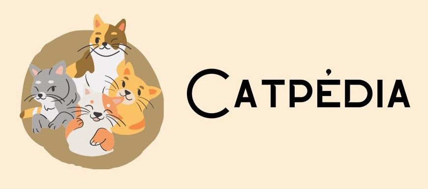

INÍCIO
GRÁFICOS
CONTATO
Guia Completo de Raças de Gatos: Descubra o Mundo Felino
Buscar
Gráficos
Nossos gráficos exibem apenas cinco raças de gatos por categoria para garantir simplicidade e legibilidade.